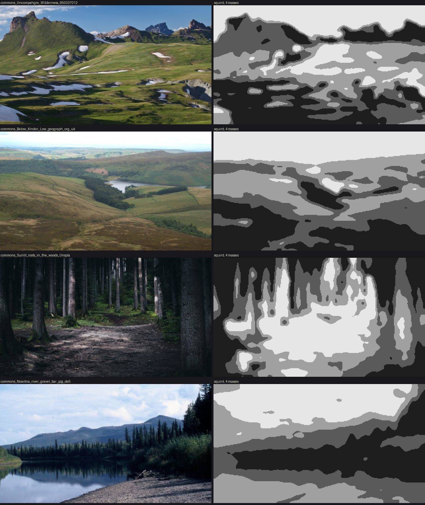
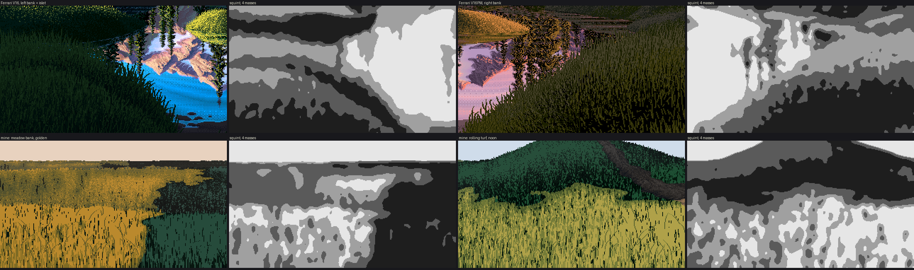

Lesson 1: Read the masses
Before painting ground you need three facts about your subject:
- where its big shapes are;
- how dark each one is, and how many values it holds;
- how each shape turns.
Eyes are bad at all three, because texture distracts them. These tools measure pixels instead. Use the same tools on photographs, on Ferrari, and on your own work, so that the comparisons are fair.
1. The squint map
Blur the lightness, then cut it into four flat values at the image's own quartiles. What's left is the picture's masses:
# code/analyze.py
def Lstar(rgb):
c = rgb.astype(float) / 255
c = np.where(c > 0.04045, ((c + 0.055) / 1.055) ** 2.4, c / 12.92)
Y = c @ np.array([0.2126, 0.7152, 0.0722])
return np.where(Y > 0.008856, 116 * np.cbrt(Y) - 16, 903.3 * Y)
def squint(rgb, s=3): return ndi.gaussian_filter(Lstar(rgb), s)
# code/figs.py
def mass_map(rgb, sigma=3, n=4):
L = squint(rgb, sigma)
q = np.digitize(L, np.percentile(L, np.linspace(0, 100, n + 1)[1:-1]))
return np.array([30, 90, 160, 230][:n])[q]
Blur on L*, not RGB: you want what a value sketch would show, and green and ochre at the same L* should merge. Use σ≈3 px at game resolution. That's roughly the scale below which Ferrari's texture lives (see section 4).
On photographs
Box-downsample the photo to game resolution first (320 px wide), the steppe student's method, so that you're reading it at the scale you'll paint it:
def game_res(path, w=320):
im = Image.open(path).convert('RGB')
return np.asarray(im.resize((w, int(round(im.height * w / im.width))), Image.BOX))

t_photo_masses. Four photographs from the study's photo folder, each beside its squint map.
What each one teaches:
- Uncompahgre Wilderness (BLM, public domain). An alpine meadow in low sun. The near ground is one dark mass cast by the swells; lit bands lie on the slopes that face the sun; snow patches are the lightest shapes. The shadow edges are lobed, but each has one long side tied to a ridge. Masses from land and light. This is what my painter does.
- Below Kinder Low (Bill Boaden, CC BY-SA 2.0). Moorland under soft light. The masses here are material: dark heather and pale grass sweeping along the contours, a dark conifer plantation, walled fields. There's hardly any cast shadow. This is the kind of mass my painter can't make, and the one the critic asked for under flat light.
- Sunlit roots in the woods (Fabian Irsara, CC0). A forest path. The lit ground is one broad, dim pool along the path, framed by dark verticals. Compare Ferrari's V09 below: a ribbon of light, only a few steps above the dark.
- Nowitna river gravel bar (Oliver Kurmis, CC BY-SA 2.0 de). The gravel is a pale, nearly textureless wedge at the bottom, under a dark bank and its reflection. Close up it's stones; at 20 m it's one value.
The lesson I missed during the study: photographs tell you what should drive the masses. Ferrari tells you how to paint them.
On Ferrari
Ferrari's scenes are stored as index maps plus palettes. Load them with code/lw.py (keys are unquoted in the files, so it patches them before json.loads), then run the same squint.

014. V16 and its squint map (quartiles of the lower half). Four ground shapes: the lit islet, the lit left bank, the shadowed right bank and the dark far hummocks.

015. V13 at dusk: five or six terrace bands, each a single value with a lighter crest.
2. Count the values inside each mass
Pick a box inside one mass and count palette indices, with each one's L* and share. This is measure.region_stats:
def region_stats(name, box, top=6):
d = lw.load(name); I, P = d['idx'], d['pal']
x0, y0, x1, y1 = box
s = I[y0:y1, x0:x1]; u, c = np.unique(s, return_counts=True); o = np.argsort(-c)
return [(int(u[k]), tuple(P[u[k]]), round(float(Lstar(P[u[k]][None])[0])), round(100 * c[k] / s.size))
for k in o[:top]]
python3 measure.py prints these for V16 (L*, % of the box):
islet [(2, 25), (31, 21), (6, 18), (83, 14), ...]
far hummocks [(6, 29), (25, 28), (2, 16), (9, 14), ...]
right bank [(0, 34), (2, 28), (15, 22), (18, 12), ...]
near left bank [(3, 37), (10, 36), (2, 12), (15, 10), ...]
This is the source of rule 2 on the card. A shadow mass has two or three values and they're nearly black; the brightest colour in the whole ground (L* 83) belongs to the one lit shape. When I made palettes by lighting maths I got mud. When I set each step's L* from numbers like these, I got masses.
A related trick: draw the index map with a random colour per index. His masses each use one short run of adjacent indices, so the index map is a map of the masses and forms.

023. V16's index map in random colours.
3. Measure how a form turns
Squint maps say where; counts say how dark. To learn how a form turns, measure its value by depth below its crest. On V16's far hummocks, map each index to a step (0 darkest to 3 lit), walk down every column, and average by rows below the top of each run (measure.crest_profile_of):
runs ~20 px: 1.4 1.7 1.7 1.7 1.9 1.7 1.6 1.6 1.5 1.4 1.1 1.0 1.0 0.8 0.5
runs ~30 px: 1.7 1.9 1.9 1.8 2.0 2.2 1.7 1.2 0.9 0.9 1.1 1.0 0.8 0.8 0.8 ...
(every second row is printed)
Read it as a shape: a slightly darker crest, a lit band about a quarter of the way down, then a fall to a dark base where the next hummock overlaps. That became crest_profile in lesson 3.

101. His hummocks (top), filled with that profile (middle), and the crest lines found in his squinted value (bottom, red).
A caution from doing it: the top of a mask is not a crest. His crest lines are inside the hummock mask, where one mound overlaps the next. I found them as upward steps in his squinted value down a column, and kept only the long ones (25 px or more), because short ones are texture.
4. Point the same tools at your own work
This is the part I most want you to do, because it's where my own work fell short and I didn't see it until I measured.
The squint test. Run mass_map on a Ferrari passage and on yours at the same scale:

t_mass_compare. Top: Ferrari's V16 and V16PM banks. Bottom: my meadow bank and noon hill. The same squint on each.
Inside his banks, the squint gives smooth bands that follow the form. Inside my lit masses it gives mottle, because my tufts and marks have structure at the squint's scale. His texture is finer than a squint and mine isn't. If your squint map has mottle inside a mass, your texture is competing with your masses.
The class count. Count steps in the same box of his near grass and yours:
| near lit grass | base or top step | stroke, one down | olive | near-black gap |
|---|---|---|---|---|
| Ferrari V16PM | 40% | 48% | 6% | 6% |
| mine, as shipped | 72% | 15% | 5% | 7% |
In his lit grass the strokes are the majority. When your numbers differ this much, find the cause by switching terms off one at a time and recounting. I guessed wrong first; the counts found it. Lesson 4 has the details.
Every time you add a term, print how much it changed the picture:
a = ground.paint_ground(W, H, crest_band=0, mass_turn=0, **kw)
b = ground.paint_ground(W, H, **kw)
print(np.abs(a.v - b.v).mean()) # I got 0.0: my edit had silently inserted nothing